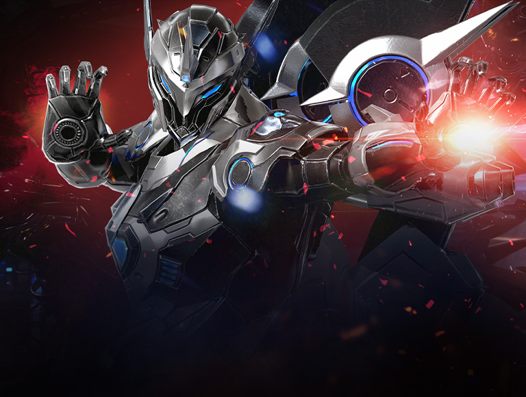
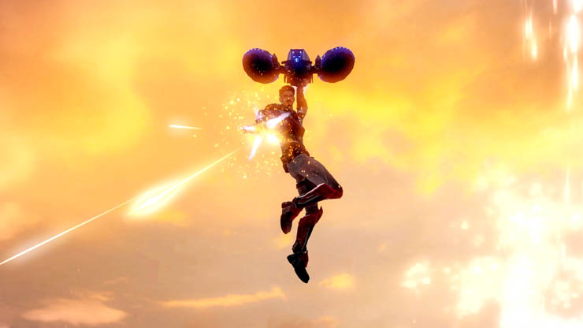

Machinist Class

About the Class
The Machinist is a combination of cutting-edge technology and cutthroat combat. Using drone attacks, the Machinist takes time to analyze their aim ensuring they hit their target. The Machinist is deadly and deadly accurate. When weapons aren’t enough they activate their identity skill, switching into a cutting-edge Hypersync technology suit. The Hypersync core energy is charged by landing attacks; the better your fight the longer you can go.
Variations
There are two types variations of builds that this class can achieve. One focuses on the commands of the drone, person, and joint skills together. Known as Arthetinean Skill. The other variation known as Evolutionary Legacy, involves operating a suit of technilogical armor and using advanced technology to operate.
